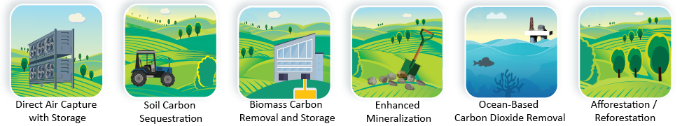
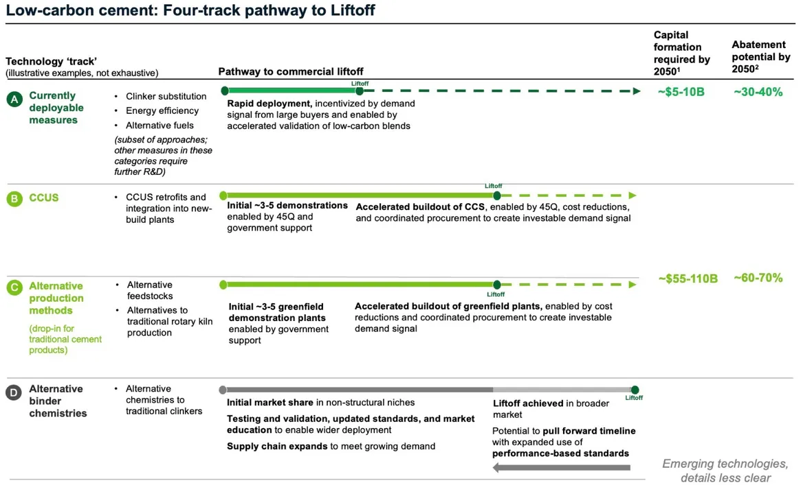
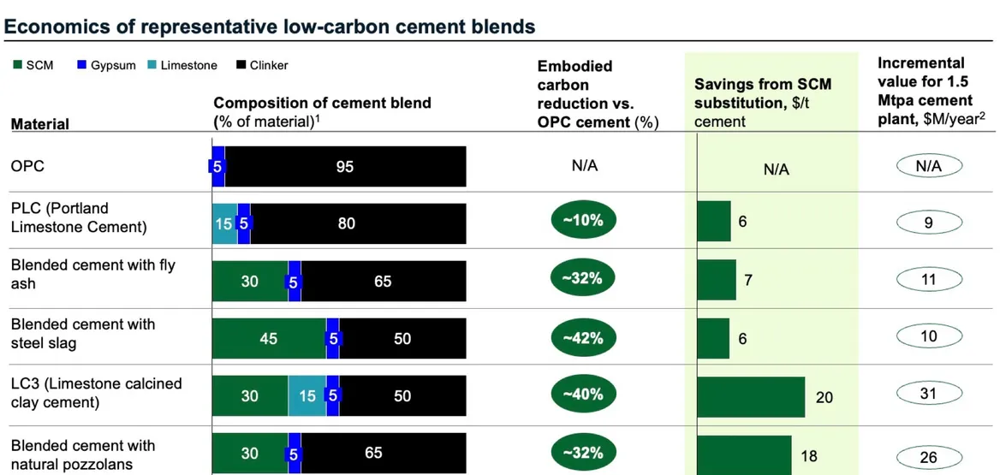
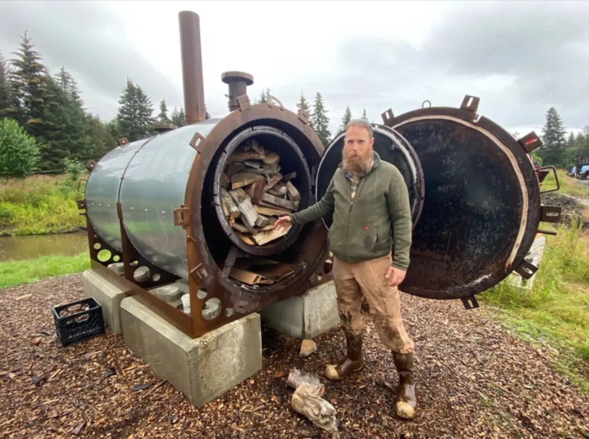

12 Technology
12.1 CCS
Most existing CCS projects in the world are enhanced oil recovery projects. That means that the captured carbon is used to produce more oil, not to reduce emissions.
The push for offshore CCS reflects the same attitude that has left the oceans in crisis today: treating them as a limitless resource to exploit and a bottomless receptacle for humanity’s waste.
Offshore CCS represents the next frontier of ocean abuse by the fossil fuel industry.
Whether on land or under the sea, CCS is not a solution to the climate crisis. Experience shows it is costly and ineffective, and only prolongs dependence on fossil fuels.
Carbon Storage in Theory Once CO₂ is captured, operators can inject it underground or under the seabed into a variety of different geologic formations, including saline aquifers, oil and gas reservoirs, coal seams, basalt formations, and organic shale formations.3 While storage in each of these formations is theoretically possible, there are geologic variables at each injection site that make it difficult to predict the behavior of the CO₂ underground.4 In principle, each of these formations can hold the CO₂ underground at a temperature and pressure that keeps the CO₂ in a supercritical state, meaning that it has properties of both a liquid and a gas. Depending on the site’s geology, the CO₂ may dissolve into some of the brine underground or trigger a chemical reaction that slowly turns the carbon into a solid mineral, over thousands of years, but most injected CO₂ is physically held underground by a seal known as a caprock.5 Descriptions of how CO₂ storage may work must be interpreted in light of the limited experience with CO₂ sequestration to date, the site-specific nature of geologic variations and leakage pathways, and the difficulty of tracking these developments over geological rather than human timescales.
Tooze on IEA Report
One scenario that the fossil fuel industry should not comfort itself with, according to the IEA (pdf), is the idea that gigantic carbon capture will permit a continuation or even expansion of the current industry.
If oil and natural gas consumption were to evolve as projected under today’s policy settings, this would require an inconceivable 32 billion tonnes of carbon captured for utilisation or storage by 2050, including 23 billion tonnes via direct air capture to limit the temperature rise to 1.5 °C. The necessary carbon capture technologies would require 26 000 terawatt hours of electricity generation to operate in 2050, which is more than global electricity demand in 2022. And it would require over USD 3.5 trillion in annual investments all the way from today through to mid-century, which is an amount equal to the entire industry’s annual average revenue in recent years.
Given the industry’s heavy reliance on carbon capture fantasies, this is a strong and important statement from the IEA.
Tooze (2023) Carbon Notes 7 - The IEA’s message to the oil and gas industry: wake up!
CIEL
Deep Trouble
Facing growing scrutiny over their contributions to climate change, polluting industries are increasingly looking for ways to cover up their continued emissions rather than phase out the fossil fuels driving them. One way companies claim the world can continue producing and using oil, gas, and coal without harming the climate is through carbon capture and storage (CCS), which purports to enable polluters to trap their carbon dioxide (CO2) emissions and bury them underground or under the seabed.
Despite the fanfare around CCS, it is a costly and risky endeavor and nearly all the world’s past CCS projects have experienced unexpected problems or failed outright. The technology’s poor track record hasn’t stopped the fossil fuel industry from championing new projects, and over the last few years, companies and governments have put forward a rash of new proposals that aim to store industrial emissions offshore under the seabed.
A new wave of proposed projects aims to pool CO2 waste from various fossil fuel and industrial activities for injection in offshore storage “hubs” in oceans around the world. This untested technique, which involves a step change in the scale and complexity of offshore CCS, poses uncalculated risks. Some of the envisioned hubs are associated with the buildout of new fossil fuel projects, and most would store waste from industries that must be scaled down or phased out if the world is to avoid catastrophic climate change.
Deep Trouble: The Risks of Offshore Carbon Capture and Storage explains the threat presented by a massive buildout of offshore CCS infrastructure and uncovers the government financing and fossil fuel interests enabling and advancing this new wave of projects. The report concludes that governments must halt the expansion of offshore CCS by ending subsidies and support for these projects, while interpreting existing laws and strengthening emerging regulations to protect the oceans from absorbing even more of humanity’s waste and safeguard communities, the environment, and the global climate.
**Ciel memo*
Until now, global experience with offshore CCS has been based on just two projects in Norway, both of which encountered unpredicted problems despite their relatively simple designs and small scales. Far from a proof of concept, those projects prove the complexity of offshore CCS and raise serious con- cerns about proposals to ramp it up in size and scope.
Injecting CO₂ under the seabed presents uncalcu- lated risks and untested monitoring challenges. Whether onshore or offshore, injecting CO₂ under the Earth’s surface has the potential to contaminate groundwater, cause earthquakes, and displace deposits of brine, which can be toxic. These risks have never been confronted at scale, and the magnitude of offshore injection contemplated by proponents would create unprecedented challenges in managing reservoir pressure and monitoring CO₂ plumes in the depths of the ocean.
Proposed CO₂ storage hubs are concentrated in areas most prone to leaks. The single biggest risk of CO₂ leakage comes from the interaction of injected CO₂ with legacy oil and gas wells.
Offshore CCS projects are costly and largely dependent on public subsidies. CCS is inherently expensive, and the costs for its deployment are only heightened offshore. These high costs are driving industry demands for public subsidies, which effec- tively pay polluters to bury some of their pollution rather than require them to stop generating it in the first place.
Regardless of how the captured carbon is used, any CCS project requires significant energy inputs and a web of different facilities to function, and all of this infra- structure poses risks to the public. CO₂ processing facilities, for example, release large amounts of air pollutants like sulfur dioxide, while carbon capture equipment is known to greatly increase the amount of ammonia that a facility spews into the air. Running carbon capture equipment is also enormously energy-intensive, increasing the overall emissions of the facility where the capture equipment is installed.14 This is known as an “energy penalty.”
At high concentrations, CO₂ is a toxic gas and an asphyxiant capable of causing “rapid ‘circulatory insufficiency,’ coma and death.” (When a CO₂ pipeline ruptured in Mississippi in 2020, dozens of people nearby were knocked unconscious and at least forty-five wound up in the hospital).
Tthe total projected capture amount of 450 million metric tons (tonnes) remains relatively insignificant from a climate change perspective, amounting to approximately 1.5 percent of current annual global CO₂ emissions from energy and industry.
The very idea that offshore CO₂ storage is feasible at all is based almost entirely on two small projects, both in Norway. These storage ventures both encountered problems in their early phases and prove that CO₂ storage is a challenging and unpre- dictable task.26 Moreover, uncertainties remain regarding the permanence of storage, processes for long-term monitoring, and liability for leaks. Many of these risks have yet to be fully assessed, let alone comprehensively regulated.
Sleipner and Snøhvit
he world’s first offshore CCS project, called Sleipner, began operating in 1996. The Norwegian petroleum company Statoil (now Equinor) started capturing CO₂ from its Sleipner gas field and inject- ing it into saline reservoirs beneath the North Sea in order to avoid paying the 1991 Norwegian CO₂ tax.32 In 2008, Statoil launched a second CCS project that began capturing CO₂ from its offshore operations at the Snøhvit gas field and reinjecting it beneath the seabed.
In both projects, geologists failed to accurately predict how the injected CO₂ would behave under- ground. At Sleipner, the CO₂ migrated upward from its intended storage point into a different layer of the subsurface. The Snøhvit project turned out to have significantly less storage capacity than expected, forc- ing Equinor to sink an unplanned USD225 million or so into identifying the problem and developing a new storage site. A 2023 report on Sleipner and Snøhvit from the Institute for Energy Economics and Financial Analysis (IEEFA) points to the projects’ problems as evidence that storing CO₂ underground is “not an exact science,” and that CCS, even after “extensive repeated study, using the most modern methods, is not foolproof.”
Despite the significant challenges with these two relatively simple projects, industry leaders still often refer to Sleipner and Snøhvit as success stories that substantiate the safety and feasibility of much larger, more complex offshore CCS projects, such as the hubs being proposed worldwide. The projects have emboldened Equinor and the Norwegian govern- ment to promote Norway as a primary destination for CO₂ waste from other countries.
Until now, these two projects have received little scrutiny in Norwegian political debate or in the broader environmental movement — perhaps due in part to the dearth of independent research into CCS free of funding or participation by the oil and gas industry, including at Norwegian higher education institutions.
Both the Norwegian projects are relatively small in scale: They each have a maximum injection rate of less than 1 million tonnes per year. This amounts to less than one thirtieth of Norway’s annual emissions, and pales in comparison to the much larger ambitions of major proposed projects.
CCS Hubs
The pervasive concept of offshore “CCS hubs” introduces additional complexities beyond what stand-alone facilities like Sleipner and Snøhvit were designed for. Both Sleipner and Snøhvit involve CO₂ captured from a single source, while many new CCS proposals envision storing CO₂ from multiple sources in one location. Because different indus- trial processes produce CO₂ streams with different chemical makeups, hub operators would need to ensure that the substances they accept from different industries would not damage their infrastructure or elevate risks. Impurities like water, hydrogen sulfide, sulfur oxides, or carbon monoxide can all be present in industrial CO₂ streams at varying levels.40 These impurities can cause pipeline corrosion41 and compound the dangers workers would face from a blowout: Even with pure CO₂, a blowout could be deadly due to the risk of asphyxiation, but impurities could make a rupture toxic as well.
Denmark
Denmark’s embrace of CCS is at odds with its commitment to phase out fossil fuels. As a found- ing member of the Beyond Oil and Gas Alliance (BOGA) launched in 2021 at the 26th Conference of the Parties to the United Nations Framework Con- vention on Climate Change (UNFCCC COP26),55 Denmark promised to sunset oil and gas production domestically by 2050. And yet, the offshore CCS projects Denmark is promoting only prolong reliance on oil and gas.
Longship
In 2020, the Norwegian government announced plans to launch a large-scale CCS demonstration project in an effort to create a new market for CO₂ disposal as a service across the European continent. The project, known as Longship, would be an open- source network of CCS infrastructure that includes carbon capture at industrial facilities throughout the continent, paired with transport and storage in a sub-seabed site located off the western coast of Norway. The Norwegian government will fund two- thirds of the project, an estimated USD1.57 billion (NOK 16.8 billion), while the remaining costs will be shared among the project’s partners. The transport and storage component of the project, is known as Northern Lights.
Northen Lights
In Norway, developments are underway for a new offshore CCS project — led by Equinor in partnership with Shell and Total — called Northern Lights. The Norwegian government is providing 80 percent of the funding for the first phase.48 The project would seek to inject 1.5 million tonnes per year of CO₂ in its first phase and up to 5 million in its second. This second phase would increase the amount of CO₂ injected under the seabed by a large margin, but even so, it remains a drop in the proverbial bucket: The carbon injected would amount to less than one tenth of 1 percent of Europe’s annual CO₂ emissions from fossil fuels in 2021.
Northern Lights project involves transporting CO₂ captured from European industrial facilities by ship to an onshore receiving terminal and then moving it back offshore via pipeline for injection into a storage reservoir beneath the North Sea. The subsea storage site is located about 2,600 meters (1.6 miles) beneath the seabed. Phase 1 of the project aims to capture and store 1.5 million tonnes of CO₂ per year and be operational by 2024.
The Longship project was initially planned to start with carbon capture at two Norwegian facilities, the Heidelberg Materials cement plant in Brevik and the Hafslund Oslo Celsio waste-to-energy plant. Con- struction is underway at Heidelberg Materials, but the Hasflund Oslo Celsio plant suspended the instal- lation of carbon capture equipment in April 2023 after the project exceeded its budget.
Longship is seeking additional emitters within and outside of Norway to sign onto the project, exem- plifying how the “carbon management” economy depends on steady pollution streams. In late August 2022, the project announced an agreement with the Norwegian fertilizer firm Yara to transport and store CO₂ captured from Yara’s Sluiskil ammonia plant in the Netherlands.
Although Northern Lights is pitched as a major proj- ect, its potential contribution to climate mitigation is quite limited. The project aims to scale up beyond the starting goal of storing 1.5 million tonnes of CO₂ per year, adding 3.5 million tonnes of capacity to reach 5 million tonnes depending on market demand.
This represents a potential five-fold increase in the offshore injection rate compared to Norway’s flagship Sleipner project, and with it, increased complexities. But the scale of emissions must be kept in perspective: Norway’s emissions alone amounted to about 49 million tonnes carbon dioxide equivalent (CO₂e) in 2021. The CO₂ volumes that this project aims to bury — drawn from the entire continent — are minor in comparison.
RISKS
The risks of offshore CO₂ injection must be considered in the context of the myriad pressures facing global oceans and seas, including those from increasing temperatures, acidification, nitrogen and other chemical pollution, and the proliferation of microplastics.
While carbon capture equipment may reduce the CO₂ emitted from a facility, it perpetuates, and can even increase, the release of other air pollutants that harm public health and the environment, undermining human rights.
The CCS process itself presents hazards to the climate and environment. Whether onshore or offshore, injecting CO₂ under the Earth’s surface has the potential to contaminate groundwater, cause earth- quakes, and displace deposits of toxic brine.
Brines can be detrimental to surrounding sea life because they can have salt concentrations far in excess of seawater and can contain contaminants such as heavy metals.
Preventing or mitigating hazards associated with CCS is even more technically challenging and expensive at great depths under the sea, where the dynamics of CO₂ may be harder to ascertain than on land and the resulting problems harder to resolve.
It isn’t only the offshore storage of CO₂ that presents possible hazards. Each stage of the CCS process — capture, transport, injection, and storage — has the potential to harm communities and the environ- ment, jeopardizing the right to a clean, healthy, and sustainable environment and other human rights.
Operation of carbon capture equipment could increase emis- sions of harmful fine particulate matter (PM2.5) and nitrogen oxide, and significantly increase toxic ammonia emissions.
Existing oil and gas pipelines, designed to withstand much less pressure, cannot readily be repurposed for moving large amounts of CO₂.
A large vessel capable of storing CO₂ does not yet exist, much less a fleet of them.
Unlike gas or oil pipelines, the risk from a CO₂ pipeline rupture is not combustion, but asphyxiation. CO₂ is heavily pressurized and denser than air, so if a pipeline bursts, large volumes can be released extremely quickly and stay close to the ground, threatening people in a wide radius from the release.
The US has the largest pipeline network in the world and only has about 8,000 kilometers (km) (about 5,000 miles) of active CO₂ pipelines, compared with 425,605 km (about 265,000 miles) of oil and gas pipelines.
Although experience operating CO₂ pipelines is lim- ited, extensive experience with oil and gas pipelines makes one thing clear: Pipelines leak. Over an eight- year period in the US, there were more than 2,000 recorded incidents with gas pipelines alone. These incidents resulted in more than 100 deaths and nearly 600 injuries.
Presence of water, contaminants, or impurities such as hydrogen sulfide in the CO₂ stream increases the risks of pipe corrosion.
Shipping CO₂ increases emissions in one of the most difficult-to-decarbonize trans- port sectors. Generating fossil fuel emissions to transport fossil fuel emissions is counterproductive at best. Refrigerating the CO₂ cargo — which must be kept under high pressure and low temperature to be transported in liquid form — and powering the ship requires burning more fossil fuels. Research by oil and gas industry analyst Rystad, considering potential CO₂ shipping routes, found that some vessels traveling long distances could produce emissions equivalent to as much as 5 percent of the CO₂ being transported.
CO₂ leaks would affect the marine environment as well. Its interactions with the sea would be complex: hydrates and ice might form, and temperature differences would induce strong currents. Some of the gas would dissolve in the sea, but some would be released to the atmosphere.
The injection of high-pressure CO₂ under the seabed is a complicated process that creates significant risks and uncertainties beyond just leakage. The aquifers into which CO₂ could be injected are not simply empty pockets underground, but porous rock formations that can be filled with brine, water, sand, or other materials. CCS operators propose injecting CO₂ into the “pore space” that these other substances occupy. Injecting the CO₂ into this space displaces whatever was there before, elevating the pressure underground and often pressurizing areas well beyond the boundaries of the injection site. Too much pressure can cause the caprock, the impervious rock layer that seals the brine and CO₂ underground, to crack, causing a leak. Operators must also limit pressure build up in order to avoid triggering earth- quakes, a known risk with any subsurface injection.
Brine can leak from pipelines and needs to be properly managed and disposed of to avoid contaminating the environment. As acknowledged in an EU-funded report involving Statoil (now Equinor), the high salinity of brine can be toxic to benthic (deep sea) organisms like coral and sea anemones.
If brine is allowed to percolate to the surface of the seabed, such brines could cause a ten-fold increase in local salinity in surface sediments and seabed depressions, thus representing a potentially severe source of osmotic shock to benthic organisms.
New studies demonstrate the risks of assuming that the ocean has a vast storage capacity. Researchers warn that the dynamics within each individual geologic formation are unpredictable, and that macro estimates of geologic storage capacity are likely flawed.
Building out industrial-scale CCS may not be as feasible as current regional inventories suggest and pressure management techniques may not function as planned.
Legacy deposits of oil in offshore wells can react with injected CO₂ to form bitumen, a viscous hydrocarbon substance, creating blockages and reducing the ability to inject more CO₂.
If CCS is widely deployed onshore and offshore, even a 0.1 percent leakage rate could cause up to 25 gigatonnes of additional CO₂ emissions in the 21st century, posing a major risk to the climate.
Despite the fact that legacy oil and gas wells pose the single greatest risk of CO₂ leakage at offshore storage sites, the areas being heavily targeted for offshore CCS development are precisely those zones where old wells abound: sites of long-standing oil and gas drilling.
There is little reason to believe that injecting CO₂ into areas where countless existing leaks from oil and gas wells go undetected or unreported would guarantee “permanent” storage.
In the event of a storage well failure or other extreme release of CO₂ offshore, the problem may be very difficult, if not impossible, to correct.
CO₂ might cause wells to fail due to its incompatibility with certain commonly used materials.
If there is a leaking CO₂ well or a blowout, the mitiga- tion measures used for oil and gas well accidents, like a physical barrier, won’t work to contain CO₂. The only option may be to stop injection altogether.
Significant uncertainties about the long-term performance of a CO₂ storage site should be resolved prior to injection of large volumes of CO₂; if uncertainties cannot be resolved, injection should be stopped.
If injection is halted, the CO₂ that would have been captured to supply the injection site will end up simply vented into the atmosphere, assuming the underlying emitting activity is not also paused. This would undermine any climate rationale for operating a carbon capture system in the first place.
CIEL (2023) Deep Trouble -The Risks of Offshore Carbon Capture and Storage (pdf)
12.1.1 EOR - Enhaced Oil Recovery
CIEL
The vast majority of the CO₂ captured at existing carbon capture and storage (CCS) projects around the world is used in oil fields, where it is injected into depleted wells to force more oil to the surface, a process known as enhanced oil recovery (EOR)
CIEL (2023) Deep Trouble -The Risks of Offshore Carbon Capture and Storage (pdf)
12.2 CDR - Carbon Dioxide Removal
Carbon dioxide removal (CDR) encompasses various deliberate human approaches that can remove CO2 from the atmosphere and store it in oceanic, terrestrial or geological reservoirs over climate-relevant timescales of decades to millennia. These approaches include schemes such as reforestation, afforestation, iron fertilisation, ocean alkalinity enhancement, enhanced rock weathering, bioenergy with carbon capture and storage (BECCS) and direct air capture and storage (DACCS). CDR is distinct from methods aimed at preventing new emissions at point sources, such as carbon capture and storage (CCS) at fossil power plants or cement works, as these prevention methods are classed as emission reduction strategies.
CDR focuses on removing CO2 that is already in the atmosphere or in the upper ocean, and permanently storing it for centuries or longer.

Office of Fossil Energy and Carbon Management (2023) Carbon Negative Shot
12.2.1 GMO - enhanced photosynthesis
Corbyn
Carbon-guzzling trees and crops, genetically altered to boost photosynthesis and store carbon in the roots, could absorb millions of tonnes of CO2 from the atmosphere
There are projects under way around the world to genetically engineer plants – namely crops – for traits such as bigger yields, disease resistance or drought or heat tolerance. But efforts to engineer them to do better at drawing CO2 out of the atmosphere to fight the climate crisis directly are newer.
Living Carbon, founded in 2019 and which has received $36m in venture capital funding to date, is in the vanguard of establishing the technology in trees. Meanwhile, a handful of others, including two world-leading California-based scientific institutions, are tackling how it might be done in agricultural crops. Both the Salk Institute for Biological Studies in San Diego and the Innovative Genomics Institute (IGI) in Berkeley, a joint venture between the University of California, Berkeley and UC, San Francisco, have received large amounts of philanthropic funding.
The possible impact of this approach on global CO2 emissions is difficult to quantify – it depends on how significant the gains could be, and how widely it’s deployed. But its proponents are bullish that if scaled up it could make a significant contribution and buy the world some time.
It is by increasing the efficiency of photosynthesis – the process by which plants use light, water and CO2 to make sugars that fuel plant growth (with oxygen as the byproduct) – that Living Carbon’s trees are able to capture more CO2 than they naturally would.
In a scientific paper published this April, the company reports that in a four-month-long greenhouse trial its modified poplars increased in biomass by 35-53% over its controls, equivalent to removing 17-27% more CO2 from the air.
It has been found, for example, that trees now growing in warmer conditions because of climate change grow faster because they suck up more CO2 anyway – though the trade-off is that they might die sooner.
Corbyn (2023) Could superpowered plants be the heroes of the climate crisis?
12.2.2 Carbon Casting (Graphyte)
Osaka
Now, a start-up says it has discovered a deceptively simple way to take CO2 from the atmosphere and store it for thousands of years. It involves making bricks out of smushed pieces of plants. And it could be a game changer for the growing industry working to pull carbon from the air.
Graphyte, a new company incubated by Bill Gates’s investment group Breakthrough Energy Ventures, announced Monday that it has created a method for turning bits of wood chips and rice hulls into low-cost, dehydrated chunks of plant matter. Those blocks of carbon-laden plant matter — which look a bit like shoe-box sized Lego blocks — can then be buried deep underground for hundreds of years.
The approach, the company claims, could store CO2 for around $100 a ton, a number long considered a milestone for affordably removing carbon dioxide from the air.
Graphyte’s approach uses the power of plants and trees to photosynthesize and pull carbon dioxide from the air. While trees and plants are excellent at carbon capture, they don’t store that carbon for very long — when a plant burns or decays, its stored carbon comes spilling back out into the air and soil.
Graphyte plans to avoid that decomposition by taking plant waste from timber harvesters and farmers and drying it thoroughly, removing all the microbes that could cause it to decompose and release greenhouse gases. Then, in a process that they call “carbon casting,” it will compress the waste and wrap it into Lego-like bricks, for easier storage about 10 feet underground. The company says that with the right monitoring systems, the blocks can stay there for a thousand years.
Graphyte is planning to build its first project in Pine Bluff, Ark., and the company hopes to sequester its first carbon for a customer in 2024.
Osaka (2023) The Lego-like way to get CO2 out of the atmosphere
12.2.3 DAC -Direct Air Capture
Room
DACCS - a costly distraction
DACCS systems generally use enormous fans to push large volumes of air over either a liquid solvent or solid sorbent that absorbs CO2. Then a large amount of energy is needed to release the CO2 and regenerate the sorbents. The overall efficiency of this process is very low (5% to 10%) and the price very high because CO2 in the air is so diluted—it’s 300 times more diffuse than the CO2 in a coal plant’s flue gas, and the entire Houston Astrodome contains only about 1 ton of CO2.
Per ton of CO2 captured and stored, current DACCS costs range from several hundreds of dollars to $1000 or more. A 2018 “techno-economic assessment” of DAC concluded, “CO2 separation from air is unable to economically compete with CCS.”
At more than 50 times the cost per metric ton of most natural climate solutions, long-term solutions [like DACCS] today are both limited in availability and practically cost prohibitive. These prices for carbon removal assume DACCS is powered entirely by carbon-free power such as solar and wind. Powering DACCS system by natural gas, increases costs for the negative emissions by 250%.
DAC is an expensive and inefficient way to use vast amounts of renewables (or nuclear power). That carbon-free power could have been used to directly replace the CO2 emissions from fossil fuel plants and cars cheaply and efficiently.
Only when the region’s electricity system is nearly completely decarbonized, do the opportunity costs of dedicating a low- carbon electricity source to DAC disappear.
DACC is unfortunately an energetically and financially costly distraction in effective mitigation of climate changes at a meaningful scale.
The affordability, scalability, and wisdom of running DACCS on carbon–free power are likely to remain problematic for decades. Yet, tree planting also has limited scalability, and scaling up BECCS increases CO2 in the air for several decades.
Since CDR will very likely be a bit player for decades, “net zero” is a dangerous myth.
The idea we can overshoot a temperature target by mid-century and then turn global emissions massively negative to quickly cool back down is magical thinking.
(Reference contains usefull introduction to DACCS in the appendix):
Gallucci
The startup Heirloom says it’s capturing CO2 from the sky and locking away the planet-warming gas, making it the first and only commercial U.S. plant to do so. On Thursday, the startup Heirloom unveiled its “direct air capture” facility in Tracy, California, which the company says has so far clocked nearly 1,000 hours of operations. Heirloom’s technology uses limestone to absorb CO2 from the atmosphere. Through a novel process, the captured carbon is then injected into concrete, where it ostensibly stays trapped forever.
To be sure, Heirloom’s plant is hardly capable of reversing the damage caused by decades of rampant fossil fuel consumption. The open-air warehouse, located some 70 miles east of San Francisco, can absorb a maximum of 1,000 metric tons of CO2 per year — less than 0.1 percent of the annual emissions from a single gas-fired power plant.
In 2017, the Swiss company Climeworks opened the world’s first DAC facility near Zurich, which used large fans to suck air into containers and filter out CO2 molecules. Although that facility stopped operating last year, Climeworks now runs a 4,000-metric-ton plant in Iceland.
Heirloom’s own process begins with an industrial kiln, which the company says is powered by renewable electricity from a local provider. Inside the kiln, limestone is heated to 1,650 degrees Fahrenheit, which breaks down the mineral into its constituent parts of calcium oxide and CO2. The same reaction occurs in cement-making, which is why cement is one of the world’s top-emitting industries.
But instead of releasing CO2 like cement kilns do, Heirloom’s kiln pumps the gas into a storage tank. The remaining calcium oxide is then spread onto hundreds of flat silver trays that are stacked vertically on 40-foot-tall racks, resembling a bakery of comically large proportions. The racks are exposed to open air for several days, during which time the white powder soaks up CO2 from the air like a sponge. Once saturated, the material heads back into the kiln, and the process starts again.
According to Heirloom, the captured CO2 gas could eventually be permanently stored “safely underground.” For now, however, the company is working with the startup CarbonCure to turn the CO2 into a dry-ice-like material and mix it with concrete, where the CO2 mineralizes and gets trapped.
By some estimates, DAC currently costs around $600 to $1,000 per metric ton of CO2.
Direct air capture allows polluting industries to live on, when we should be focusing on a just transition to renewables.
Gallucci (2023) America’s first commercial direct air capture plant just got going
12.2.4 ERW - Enhanced Rock Weathering
Ho
Enhanced rock weathering (#ERW) seems like a promising way to remove CO₂ from the atmosphere. However, this paper says that to remove 1 billion tonne of CO₂ per year requires land area larger than the entire United States.
Linke Abstract
The ability of engineered enhanced rock weathering to impact atmospheric CO2 has been challenging to demonstrate due to the many processes occurring in soils and the short time span of current projects. Here we report the carbon balance in an Icelandic Histic/Gleyic Andosol that has received large quantities of basaltic dust over 3,300 years, providing opportunity to quantify the rates and long-term consequences of enhanced rock weathering. The added basaltic dust has dissolved continuously since its deposition. The alkalinity of the soil waters is more than 10-times higher than in equivalent basalt-dust-free soils. After accounting for oxidation and degassing when the soil waters are exposed to the atmosphere, the annual CO2 drawdown due to alkalinity generation is 0.17 tC ha-1 yr-1. This study validates the ability of fine grained mafic mineral addition to soils to attenuate increasing atmospheric CO2 by alkalinity export. Induced changes in soil organic carbon storage, however, likely dominate the net CO2 drawdown of enhanced weathering efforts.
Linke Conclusions
The results of this study confirm the ability of the addition of fine-grained basaltic rock to soils to enhance CO2 drawdown directly from the atmosphere due to alkalinity production. In total it is estimated that 17 ± 3.6 g C m− 2 yr− 1 is currently drawn down and added to rivers by alkalinity production from our South Iceland field site. The enhanced alkalinity production of our soils was produced by the addition of approximately 1.7–2.6 t m− 2 of basaltic dust to this soil over 3,300 years. Upscaling of this process to address even a small fraction of the mass of anthropogenic CO2 emissions to the atmosphere, however, may be challenging for two reasons: 1) this enhanced weathering process is slow and would require more land than what is available for a sizeable drawdown of anthropogenic CO2 through alkalinity production and 2) the here to date unquantified effect of adding basalt powder to soils on soil organic matter. So, although this study serves as a proof of concept of the potential of enhanced weathering efforts to contribute to attenuating atmospheric CO2 concentrations, the degree to which this approach will prove successful at a larger scale remains unclear.
Linke (2023) Direct evidence of CO2 drawdown through enhanced weathering in soils
12.2.5 Marine CDR
Doney
A variety of ways to capture and store CO2 from the ocean have been suggested. For example, marine CDR may include altering the chemical composition of sea water so that the ocean absorbs more CO2 from the atmosphere; using electrochemical techniques to remove dissolved CO2 from seawater and then storing that CO2 underground; or adding nutrients such as iron to areas of the ocean to encourage the growth of microscopic plankton that can sink to the seafloor and be stored for centuries or longer.
12.2.6 Blue Carbon
Johannesen
Blue carbon will not solve climate change. The effect is too small; existing sediment carbon stock is a liability; and there is a timescale mismatch between ancient fossil fuel emissions and uptake by vegetation. Clearer communication would support informed decision-making.
The protection or expansion of blue carbon ecosystems can only make a very limited contribution to solving the problem of excess atmospheric CO2. In this Comment, we address three issues that relate to this point: (1) the magnitude of the effect, (2) the security of the existing sediment carbon stock, and (3) the mismatch in timescales. Despite these limitations, blue carbon ecosystems are important ecologically and can play a role in short-term carbon sequestration.
The global rate of blue carbon burial in seagrass meadow sediment has been greatly overestimated as a result of systematic methodological problems. Briefly, most global estimates neglect the effects of sediment mixing (wave mixing or bioturbation), which overestimates sedimentation rates; neglect remineralization of organic carbon in surface sediment, which overestimates carbon burial rates; include terrigenous organic carbon, much of which would have been buried even in the absence of the seagrass meadow; and extrapolate from a few sites with tropical species that have extensive, carbon-rich root mattes to the whole global extent of seagrass habitat
Also, many estimates of organic carbon accretion do not consider the effect of CaCO3 formation, which releases carbon to the atmosphere and negates a variable fraction of the drawdown associated with organic carbon burial5 or the release of CH4 or N2O from seagrass meadows and salt marshes.
Even the most optimistic estimates suggest that full restoration of mangrove, salt marsh and seagrass ecosystems would only provide an ongoing sink equivalent to 3% of current global anthropogenic emissions. Full restoration is unlikely, and the 3% estimate relies on carbon burial rates that are almost certainly too high.
Existing sediment carbon stock is a liability, not an asset
Blue carbon stock refers to the inventory of organic carbon stored over a defined depth (often 1 m) in the sediment of vegetated coastal ecosystems. Most blue carbon papers quantify sediment carbon stock, rather than ongoing burial rates.
The existing stock is buried in sediment but no longer draws down any more carbon dioxide from the atmosphere. In fact, existing sediment carbon stock represents a potential liability, i.e., an insecure reservoir of carbon that could be released into the atmosphere in the future. This is an important factor that has been largely overlooked in the public discussion of offsetting schemes.
When a seagrass meadow dies or a forest burns, some of the stored carbon is re-released into the atmosphere8. Existing stocks are increasingly threatened as a result of climate change, both by sea-level rise and by episodic marine heatwaves. The magnitude of the re-release of carbon as a result of these processes is unknown, but integrated over a long enough time, it could easily become as large as or larger than ongoing burial. Accretion is gradual and incremental, while release is episodic and highly variable.
Timescale mismatch
Even if we exclude the possibility of avoided emissions offsets, a fundamental problem with the idea of blue carbon offsets for fossil fuel emissions is the orders of magnitude difference in timescales. The modern carbon cycle acts on timescales of days to about a century, or up to a few thousand years in the case of equilibration with the deep ocean Carbon exchanges readily among the atmosphere, surface ocean, vegetation and surface sediment: the expansion of a seagrass meadow moves some carbon from the atmosphere into vegetation and surface sediment; a forest fire releases carbon from the trees back into the atmosphere. These processes only represent exchange among the compartments of the active, modern carbon system, and not a true removal from the system.
By contrast, fossil fuels have been isolated from the active carbon cycle for hundreds of millions of years. Burning fossil fuels adds ancient carbon into the modern carbon cycle, increasing the total amount to be distributed among the atmosphere, vegetation, etc. The timescale for the removal of the excess carbon dioxide by natural processes is tens of thousands to hundreds of thousands of years for silicate rock weathering and hundreds of millions of years for the re-formation of fossil fuels. Moving carbon from one short-term reservoir to another does not remove it from the actively cycling modern system.
Important role of blue carbon ecosystems
Blue carbon ecosystems do serve important functions. They provide critical habitat for juvenile fish and other marine species; they protect shorelines from erosion; they provide food security for coastal communities; and they protect existing stocks of organic carbon.
Johannesen (2023) Why blue carbon cannot truly offset fossil fuel emissions
12.2.7 Ocean Geoengineering
Mehta
Carbon dioxide makes seawater more acidic while warmer seas bleach corals and absorb less CO2
Nascent technologies aim to remove CO2 by tapping into the ocean’s natural carbon cycles
Ocean alkalinity enhancement decreases acidity encouraging absorption of more CO2
Estimates suggest the technology could reach 2 gigatons of removals across the world’s coastlines
Other systems use membranes to filter CO2 from seawater and convert it for capture and storage
Carbon dioxide makes seawater more acidic, so it’s harder for sea creatures to grow shells, while the heat bleaches corals and destroys breeding grounds for fish and marine mammals. Warmer waters also absorb less CO2.
Finding ways to increase the carbon sink at the depths of the ocean, where it can be stored for millennia, and to extract carbon dioxide from surface water offer opportunities to remove CO2 at scale.
Acquire Licensing Rights
Summary
Carbon dioxide makes seawater more acidic while warmer seas bleach corals and absorb less CO2
Nascent technologies aim to remove CO2 by tapping into the ocean’s natural carbon cycles
Ocean alkalinity enhancement decreases acidity encouraging absorption of more CO2
Estimates suggest the technology could reach 2 gigatons of removals across the world’s coastlines
Other systems use membranes to filter CO2 from seawater and convert it for capture and storageOctober 18 - Much of our planet is covered by oceans, which protect us from the worst ravages of global heating. Water and air are constantly exchanging carbon dioxide, and the seas around us have absorbed about a third of the CO2 we’ve pumped into the air, as well as the bulk of the warming it has caused. This has come at a huge cost to marine ecosystems. Carbon dioxide makes seawater more acidic, so it’s harder for sea creatures to grow shells, while the heat bleaches corals and destroys breeding grounds for fish and marine mammals. Warmer waters also absorb less CO2. Over a year. 02:00 02:28
Now a clutch of startups are trying to open up new avenues to remove even more carbon dioxide from our atmosphere by tapping into the ocean’s natural carbon cycles.
Proponents say finding ways to increase the carbon sink at the depths of the ocean, where it can be stored for millennia, and to extract carbon dioxide from surface water offer opportunities to remove CO2 at the scale required to meet the goals of the Paris Agreement. While the chemistry and modelling may stack up, these are nascent technologies. How can we be sure they’ll work in practice and won’t ultimately cause even more damage to the delicate ecosystems on which we rely? Advertisement · Scroll to continue
Some startups want to speed up the natural process by which biomass from land reaches the depths of the ocean. Israel-based Rewind plans to transport forest and agriculture residues to the bottom of the Black Sea. This is an ideal environment, the company says, because it lacks oxygen, so the residues will decompose only very slowly.
U.S. startup Running Tide is designing “carbon buoys”, combinations of biomass and alkaline minerals which could help reduce the acidity of ocean surface waters or provide a growth medium for macroalgae. Later these would be sunk to take carbon to the bottom of the ocean.
Another pathway is to speed up the natural weathering of rock that washes carbonate and bicarbonate minerals into the sea through adding alkaline minerals. So called ocean alkalinity enhancement decreases acidity, so encouraging the absorption of more CO2 from the atmosphere.
David Keller, a scientist at the GEOMAR Helmholtz Centre for Ocean Research in Germany, is coordinating a pan-European project to assess the feasibility of using the ocean to stabilise the climate. Experiments where an alkaline mineral is added to closed tanks floating out at sea suggest it’s safe to do field trials of ocean alkalinity enhancement. There are upper limits because too much alkalinity can cause the release of CO2.
By volume, the ocean holds 150 times more CO2 than the atmosphere, requiring less water to be processed for the same impact. But water is heavier so takes more energy to move. Co-locating Captura’s systems with desalination plants or harnessing ocean currents could cut energy needs. Energy consumption will be about 20-25% of DAC systems today.
Technology developed at UCLA is being exploited by spin-out, Equatic, to both produce clean hydrogen and capture CO2 from air and seawater. In its process, electrolysis of seawater produces hydrogen and creates an alkaline and acid stream of water. In the alkaline stream, the dissolved carbon dioxide forms solid calcium carbonate which can be stored, used to make cement or put back into the sea, where it’s already prevalent. Bubbling air through this (now CO2 depleted) seawater captures more CO2, which gets locked up for thousands of years as a bicarbonate. On the other side of the equation, the addition of olivine (one of the most common minerals on the planet) neutralises the acidic seawater. In turn it too should take up more CO2 from the atmosphere, when returned to the sea.
Ebb Carbon’s solution would take the water flowing out of a desalination plant or cooling water from a power plant and put it through a series of membranes to remove acidity, in the form of hydrochloric acid. The less acidic water that goes back into the sea will draw down atmospheric CO2, to be converted to bicarbonate ions and held in that form for thousands of years. There’s enough existing desalination and power-plant infrastructure to reach the two gigaton scale soon.
For now, the challenge is accurately measuring and verifying how much CO2 is being locked away, and that’s where Ebb’s emphasis is. “There’s a lot of rigour, a lot of science behind the detailed measurements and modelling that enable us to say, with a high degree of certainty, how much CO2 is pulled out of the air,” says Tarbell. That monitoring, reporting and verification is going to be critical to provide faith in the removals companies hope to claim. Nor is it cheap, suggests GEOMAR’s Keller. There are no standard approaches to do this.
As the entrepreneurs press on with modelling and experiments, they argue there’s no choice but to recruit the ocean’s natural systems if we’re to limit further warming. Our carbon emissions are already destroying the marine biodiversity upon which we depend, so we have to try everything to prevent things getting far worse.
12.2.8 CDR Controversies
Anderson
Who is responsible for cleaning up CO2 from the atmosphere?
Various methods of carbon dioxide removal (CDR) are being pursued in response to the climate crisis, but they are mostly not proven at scale. Climate experts are divided over whether CDR is a necessary requirement or a dangerous distraction from limiting emissions. In this Viewpoint, six experts offer their views on the CDR debate.
CDR started appearing in mainstream emission scenarios in the late 2000s and has become a dominant element of most mitigation scenarios consistent with the Paris Agreement’s temperature goals. Initially, CDR was dependent on the assumed success of CCS applied to bioenergy (termed BECCS). Although there was much promise for CCS in the 2000s, including an IPCC Special Report in 2005, the technology has not yet lived up to its hope, despite lofty policy ambitions5. CCS and most CDR methods are a complex set of technologies that have proved difficult to deploy at scale in real-world contexts. The repeated failure of CCS and CDR to deliver as promised has led many to question their feasibility, particularly at scale.
CDR terminology can be confusing as it combines two very different methods: restoring natural carbon sinks, such as forests, soils or oceans, and investing in unproven technologies, like BECCS, DACCS or enhanced weathering.
CDR has long been identified as a potential ‘dangerous distraction’ owing to its widespread deployment in emission scenarios but not in reality.
Given that the entire mitigation agenda is predicated on CDR working at scale, and if CDR does not work at the scale intended, then the world will go more rapidly into carbon debt and be locked into a higher-temperature pathway. A more risk-averse approach that uses only a modest scale of CDR would require greater near-term emission reductions that avoid going into carbon debt.
Enormous volumes of CDR are built into implausible mitigation scenarios for the second half of the century, generating a false sense of optimism that we can still meet ambitious temperature goals, even though global emissions are still not declining.
CDR in scenarios are effectively masking insufficient political action.
The main (IAM) modelling groups might work quite objectively, but they do so within deeply subjective political boundaries. Their low carbon futures are locked into tech-dominated versions of the present with no changes to core political elements or values of society in relation to fairness, or distribution of resources or power.
Tight political criteria, combined with very small carbon budgets, force all mitigation scenarios assessed by the IPCC to include increasingly extreme levels of CDR.
Restoration of natural carbon sinks should certainly not be used to justify any additional industrial or fossil fuel emissions. Speculative and largely unavailable CDR technologies are very different because they would require setting up entirely new industrial infrastructures at a large scale.
There is already about 2 billion tonnes of CDR occurring on land.
Big polluters and fossil fuel companies are promoting technological CDR as a cover-up for expanding their business.
The IPCC’s Working Group III report highlights the dangers of overreliance of governments on these unproven technologies. Unfortunately, these warnings are downplayed in the heavily negotiated IPCC Summary for Policymakers. They are buried under an array of models and pathways that rely on precisely such technologies, that project continued use of fossil fuels for decades and that overwhelmingly assume that the world will go beyond 1.5 °C for decades or longer — with surprisingly little attention paid to the human and environmental consequences such assumptions entail.
The major IAM modelling groups have inadvertently done the bidding of both Big Oil and those deeply wedded to the obscene asymmetry in responsibility for emissions. Since the early 2000s, these models have increasingly normalized many hundreds of billions of tonnes of CDR as a means of maintaining the political status quo and seriously delaying the need to phase out fossil fuels.
0.3 trillion tonnes of CO2 since the Paris Agreement in 2015.
An alliance has arisen between failed (and failing) political leadership and complicit IAM modelling of the community’s escalating dependence on CDR to reconcile the irreconcilable of delivering on the Paris Agreement 1.5 °C to 2 °C commitments without rocking the political boat.
As the climate is heating up, extreme weather events are becoming more frequent and we are approaching various tipping points; we risk losing the sink capacity of various ecosystems.
Industrial-scale ‘carbon farming’ to produce carbon credits is a false and dangerous promise.
It is not possible to say which CDR methods are most promising because, so far, all have failed to deploy at any meaningful scale.
It is possible to postulate theoretical pros and cons of each CDR method, but without sufficient deployment, they remain theoretical. Even afforestation and reforestation have limits, not only in terms of land competition but also in resilience to a changing climate and verifying how much carbon dioxide is removed over extended periods.
BECCS has little to no worthwhile potential, for multiple reasons. DACCS and some carefully applied nature-based solutions could have a useful role in GHG mitigation but should in no way be assumed to compensate for any fossil fuel emissions.
Important to keep a strong focus on CDR methods with characteristic timescales of storage beyond 100 years, like biochar, enhanced mineral weathering or DACCS.
CDR methods range widely regarding their climate mitigation potential, technology readiness level (TRL) and expected price range. Conventional CDR methods like afforestation, reforestation, soil carbon sequestration and peatland restoration have the highest TRL levels but do not offer long-term durability for CO2 storage. DACCS, BECCS and biochar are much more novel methods that offer strong mitigation potential and high durability and are not too far behind in terms of TRL.
The main problem is that international policymakers are implicitly relying on remarkably high volumes of CDR to help fix trajectories that already indicate a 1.5 °C overshoot, without necessarily knowing much about CDR or taking responsibility for the expected overshoot
Incorporating CDR in global scenarios is not slowing down emission reduction efforts, but it is hiding the impact of increasing global emissions and sparing climate policymakers the embarrassment of admitting that always staying under 1.5 °C is no longer achievable. But with the advent of national net-zero emission targets, the level of political scrutiny becomes higher, and it is easier to keep expectations about future national CDR levels in check.
Once governments start splitting their net-zero emission targets into emission reductions and carbon removal components, we can expect healthy national debates on the assumed trajectories, not only regarding CDR but also regarding the types and volumes of residual emissions.
Scaling up CDR could delay reducing emissions. Policymakers can address this risk by establishing separate climate targets for emission reductions and CDR.
We should cut emissions from our energy system assuming CDR will not work at scale.
Scaling these novel CDR technologies will require dedicated innovation policies.
Durability of different CDR methods are ranging from a few decades to thousands of years.It is crucial to guarantee that any residual emissions of fossil carbon are balanced by storage on the same millennial timescale
Setting up biochar production is relatively fast, hence, the reason biochar carbon removal has become the leading novel CDR method to deliver tonnes of carbon removed today. Building DACCS and BECCS plants is a longer and more complex undertaking that takes several years. Therefore, very different policy mixes and sequences must emerge to scale the vast ecosystem of CDR methods.
For direct air capture, low-carbon energy and cost are the main limitations. For biomass with carbon removal and storage, biomass and land are limitations. Other techniques face limitations in terms of land or in terms of robust schemes for monitoring and verification. The most relevant limitations will probably be social rather than technological.
There is the naive assumption that a few pilot schemes with chequered technical histories can unproblematically be rolled out at a planetary scale.
Global rates of CCS deployment are far below those in modelled pathways.
12.2.9 BECCS
Anderson
Biomass carbon removal and storage involves using biomass (such as algae, municipal waste, agricultural or forest residues) to remove CO2 from the atmosphere and store it underground or in products. It looks promising in many areas but is very context-dependent. There are a number of methods that deserve more research, including ocean alkalinity enhancement, enhanced rock weathering and agrigenomic ideas such as engineering plants for enhanced carbon sequestration or microbe-based carbon capture soil amendments. It is early to assess the scalability of all these approaches, and much of the scalability depends on culture and policy. The IPCC assesses that moderate-to-large future mitigation potentials are estimated for direct air carbon capture and sequestration, enhanced weathering and ocean-based CDR methods, with medium evidence and medium agreement.
As an engineer with a background in design and construction in the petrochemical industry, I feel a streak of professional shame when, in 2023, the pinnacle of engineering prowess is burning plants and burying the carbon (termed BECCS).
There are many reasons for this shame, but key amongst these is the very low energy density of plants. Add this to the inefficiencies in thermal electricity generation and nation-sized areas of land needed to be put aside to deliver the volumes of BECCS assumed in the IAM models. Yet, with very few exceptions, it is such an unsustainable and yesteryear approach to current problems that the IAM modelling groups evoke on a huge planetary scale. So, for me, and on so many levels, BECCS is a blunder of monumental proportions and illustrates just how low we are prepared to stoop to get the carbon molecules to add up in models.
12.2.10 DACCS
Anderson
DACCS typically relies on renewable energy to flow air over a catalyst, where the CO2 is captured before being stripped from the catalyst and subsequently stored. Despite its engineering appeal, it is still a fledgling technology and with very little scope to deliver real carbon reductions within the tight 1.5 °C–2 °C timelines. Moreover, as it stands today, in almost all nations, electricity, the key power source for DACCS, is under 20% of ‘final energy consumption’, and only a relatively small fraction of that is from low carbon generation. A triage approach to how we use what low-carbon energy supply we have would very likely see DACCS a long way down the priority order.
12.2.11 Planting Trees
Anderson
The carbon budgets provided by the IPCC already rely on a massive shift away from deforestation and a programme of forestry management, reforestation and some afforestation. So caution needs to be applied to ensure these options are not double counted.
Trees are not a secure carbon sink, as situations such as fire, land use practices, fuel shortages or pest movements can release the carbon back into the atmosphere. Finally, whilst there is immediate popular appeal to planting trees as a store of carbon, in practice, trees need to be considered as part of a rich ecosystem, including their impact on soil carbon cycling.
12.3 Cement
Lobet
“Our dream is to decarbonize cement, and we want to do it as fast as possible”
The chemical reaction at the heart of today’s cement-manufacturing process is a major reason why the production of this essential building material accounts for an estimated 7 percent of global carbon dioxide emissions from energy and industrial sources.
But a small group of tech entrepreneurs says they’ve found a better way. Cody Finke, co-founder and CEO of Brimstone Energy, is one of them.
Today, producers use limestone, a common rock, as the basis of cement. They mine it, grind it and then heat it up to temperatures roughly a quarter as hot as the surface of the sun. This drives carbon dioxide out of the rock and into the atmosphere.
Limestone is a form of calcium carbonate, a chemical compound with the formula CaCO3, made up of three main elements: calcium, carbon and oxygen. Extracting the calcium and oxygen needed for cement leaves behind the single carbon atom and two oxygen atoms — CO2. Fifty to 65 percent of the CO2 emissions from cement production result from the fact that the source rock is limestone, not from heating cement kilns to high temperatures.
Brimstone’s alternative recipe swaps out this limestone for calcium silicate rocks, which are also very common. The silicates contain the same calcium oxide, commonly known as lime. But “there is…no CO2 in the rock,”
Using an alternative source rock also allows Brimstone to lower the kiln temperatures — another way the company can reduce CO2 emissions. Typical cement production requires temperatures of approximately 900 degrees Celsius for one key part of the process and 1,450 degrees Celsius for the other. Brimstone’s process, in contrast, requires temperatures above 500ºC for only 20 percent of its heat energy.
Because of these lower temperature requirements, Brimstone can use electric kilns for most of its process instead of kilns fired by coal, petroleum coke or natural gas. For now, the company still expects to burn a fossil fuel for the hottest 20 percent of its process or use hydrogen if it’s available. It’s possible to electrify the entire process, Finke said; it’s just uneconomical to do so today.
Lobet (2021) Changing up the recipe to make low-carbon cement
St. John
“There are a lot of novel technologies out there that work, and work fine. But they’re not scalable, they’re not commercially viable — and usually it’s because the feedstock is not available in full volume, or not available where it’s needed.” “There are a lot of novel technologies out there that work, and work fine. But they’re not scalable, they’re not commercially viable — and usually it’s because the feedstock is not available in full volume, or not available where it’s needed.”
Cement and concrete production are responsible for 8 percent of human-caused carbon dioxide emissions worldwide, and novel SCMs like Terra’s offer one path to reducing that massive carbon footprint. SCMs lower emissions from concrete production because they reduce reliance on Portland cement — by far the most common type of cement made today and also the driver of concrete’s carbon impact. The production of Portland cement requires super-high temperatures that are achieved by burning fossil fuels, and the carbon-rich limestone used in its production also leaks CO2 into the air.
Major cement and concrete companies such as Cemex and Holcim already use millions of tons of SCMs today, mostly fly ash from coal plants and slag from steel mills, both to reduce their concrete’s carbon footprint and to strengthen the material. But the same climate imperatives that are pushing the cement industry to cut its carbon emissions are also driving the closure of coal plants and steel blast furnaces, making these components less ubiquitous and more expensive to get.
Terra CO2’s SCM, by contrast, is made from a variety of silicate rocks, including granite, basalt, alluvial sand and gravel, glacial flood gravel and clay-sand mixtures. Silica rock for the most part doesn’t have any embodied CO2.” That’s in contrast to limestone, the primary ingredient of Portland cement, which “by weight is about 50 percent embodied CO2” — carbon that’s released into the atmosphere when it’s processed into clinker, the precursor to Portland cement.
Terra CO2 puts these rocks into a reactor that heats them to their melting point, yielding glassy powders that can replace 25 to 40 percent of the Portland cement needed for different mixes of concrete. The company estimates that every ton of cement replaced by Terra’s SCM results in 70 percent lower carbon-dioxide emissions compared to pure Portland cement.
CarbonCure, a Canadian startup that injects carbon dioxide captured from other emitting sources into concrete, which both strengthens the concrete and stores the carbon, preventing it from entering the atmosphere. This practice can reduce the carbon footprint of concrete by roughly 5 to 15 percent, and it is relatively simple to integrate into how concrete is produced today.
Low-carbon SCMs tend to be the next step for cement-makers trying to cut their carbon emissions.
Fly ash is already supply-distressed now. By the end of the decade, it’s going to go away. And blast furnace slag is going away as well.
Cement makers such as Heidelberg Materials and Hoffman Green Cement Technologies are pursuing one SCM option known as calcined clays. This material is widely available in Asia and Africa, but not as much in North America and Europe, making it less suitable for those markets.
Other approaches that promise a completely zero-carbon replacement for Portland cement are in a more experimental phase and would require retooling the cement industry to bring to scale. Some examples include startups such as Sublime Systems and Chement, which are developing electrochemical processes to replace the high-heat methods used to make cement. More esoteric concepts include using living organisms to “grow” cement.
St. John (2023) Terra CO2 says its Texas factory will cut carbon and cost from cement
St. John
Holcim has managed to chip away at its emissions in recent years: Its 2022 annual report cited a 21 percent reduction in carbon emissions per unit of net sales from direct production and electricity consumption compared to the year before. The company has made progress largely because of a shift to lower-carbon cement and concrete products that reduce its use of clinker, the precursor material for cement, and by far the most emissions-intensive part of the industry. Crucially, costs have actually dropped along with emissions.
But not every solution to cement’s climate problem will present companies with such a clear-cut economic calculus. And while the U.S. Department of Energy estimates that more than a third of the industry’s emissions can be jettisoned using established technologies and processes like clinker substitution, the remainder of the solutions have yet to come into full focus.
Most uncertain of all is the pathway to eliminating what are called “process emissions,” which account for the majority of cement’s climate problem.
Process emissions are an unavoidable part of cement-making’s status quo. The core input of ordinary Portland cement — the product that makes up the vast majority of cement made today — is limestone, a mineral that’s about half calcium and half carbon and oxygen by chemical composition. When that limestone is converted to calcium oxide, the immediate precursor to clinker, the CO2 trapped inside the mineral is released into the atmosphere.
Eliminating these emissions means either finding novel, emissions-free ways to create ordinary Portland cement or a safe structural equivalent, or figuring out how to economically use carbon capture, utilization and sequestration (CCUS) technology to keep the CO2 generated from the manufacturing process from entering the atmosphere. Though plenty of startups, companies and researchers are hard at work on both methods, neither has, at this point, proven to be workable at the necessary scale.

The science and economics of cement substitution
The math is fairly simple on clinker substitution: The greater the amount of clinker that’s substituted with another material, the lower the carbon footprint per ton of cement that results.
By far the most widely adopted substitute is “Portland limestone cement,” which replaces up to 15 percent of clinker with ground-up limestone. Because that ground-up limestone hasn’t been processed in a way that releases its embedded carbon dioxide, this variety of cement yields an average 8 percent reduction in emissions-intensity compared to ordinary Portland cement.

A long list of supplementary cementing materials that can displace clinker and make up 30 to 45 percent of a cement mix. By far the most commonly used today are fly ash from coal plants and slag from steel mills.
The key to deploying clinker substitution at scale and keeping the economics positive are moving toward what we call next-generation substitutes. One promising “next-gen” substitute is calcined clays, a form of naturally occurring minerals.
Other next-gen supplementary cementing materials (SCMs) involve commonly available calcium silicate rock such as basalt, gabbro and other minerals. Because these rocks contain no carbon, they can be processed without releasing CO2.
New cements, new processes — a steeper path to progress
Reducing clinker use and working lower-carbon SCMs into cement mixes can have a major impact now — but outright replacing or revamping the production of ordinary Portland cement is what the industry needs to eventually reckon with.
There are dozens of startups and university and government research projects working to come up with alternatives to ordinary Portland cement. Some are even engaged in pilot-scale demonstrations. But none have yet been embraced by the cement industry as a viable option for revamping a single integrated cement manufacturing plant.
The challenge is that the chemistry of cement and concrete — the mix of cement and rocks, gravel and other materials that harden into forms and slabs — is incredibly complex.
While Portland cement is well understood, “there are still fundamental debates among scientists” on the nature of the chemical reactions that yield better or worse forms of concrete from different types of cement for use in different applications.
Meanwhile, the industry has become more fragmented in recent years, moving from large centralized cement manufacturing to a more diverse lineup of smaller ready-mix and precast concrete operations that serve a multitude of end users. Each party in this chain relies on being able to secure consistent supplies and types of products for different needs, with an array of different standards that are difficult to alter to allow for new products to get to market.
The original patent for ordinary Portland cement was issued in 1824, giving the world nearly 200 years to understand its fundamental material properties.
Fortera’s alternative cement is based on technology first developed back in the 2000s to mimic the process that leads to growth in coral reefs, but it’s just one of many contenders. Others include geopolymer chemistries like Cemex’s Vertua low-carbon concrete, magnesium oxides derived from magnesium silicate chemistries developed more than a decade ago by now-defunct U.K.-based startup Novacem, and the belite-ye’elimite-ferrite clinker being developed by Holcim.
Some methods for reinventing cement aim to forgo the high-temperature kilns altogether in favor of electrochemical processes. Sublime Systems and Chement are developing ways to use electrolyzers, like those used to make hydrogen from electricity and water, to dissolve and then extract the precursor compounds that make up cement.
There’s only a relatively small fraction of the cement market that can be replaced by alternative cements — “maybe at most 25 percent of the cement market,” according to Cody Finke, CEO of Brimstone, whose company is making a product that’s structurally and chemically identical to Portland cement. “We want to decarbonize the whole cement industry.”
It’s a worthwhile approach, but one that also remains far from guaranteed. Brimstone, the only startup to win industry approval that its alternative process results in ordinary Portland cement.
St. John (2023) To decarbonize cement, the industry needs a full transformation
Gallucci (2023) 6 innovative startups that are kicking CO2 out of cement and concrete
12.4 Biochar
Graham
The process of turning wood, twigs or leaves into biochar, through a procedure called pyrolysis, could turn about half of that matter’s original carbon content into a stable form that could stay in the ground for centuries. A study published in March in the Journal of Environmental Quality also found that using biochar, which helps keep nutrients like nitrogen in the ground, could cut planet-warming nitrous oxide emissions from agriculture by almost one-fifth.

Fig: The biochar retort, an airtight tank
As soon as you start converting forests or fields into rows of crops with the aim of producing biochar, you get into a lot more complicated questions. At that point, if you factor in the greenhouse gas emissions caused by the changes in land use (say, logging), then biochar may worsen climate change, not solve it.
While there’s significant demand for biochar on the carbon market, industry proponents are trying to generate more interest among farmers and other businesses, such as concrete companies that are adding the soot to asphalt to make their product less carbon-intensive or governments that could pour it into abandoned oil and gas wells.
Biochar doesn’t exactly fit into the standard American farming curriculum. It’s neither a fertilizer nor a pesticide, and it doesn’t supercharge crop production.
Not all biochar is equal. How it’s made and how it’s applied to soil can affect how it works.
Graham (2023) Biochar is a proven form of carbon removal. Can it scale up?
Hammond Abstract
Life cycle assessment (LCA) of slow pyrolysis biochar systems (PBS) in the UK for small, medium and large scale process chains and ten feedstocks was performed, assessing carbon abatement and electricity production. Pyrolysis biochar systems appear to offer greater carbon abatement than other bioenergy systems. Carbon abatement of 0.7–1.3 t CO2 equivalent per oven dry tonne of feedstock processed was found. In terms of delivered energy, medium to large scale PBS abates 1.4–1.9 t CO2e/MWh, which compares to average carbon emissions of 0.05–0.30 t CO2e/MWh for other bioenergy systems. The largest contribution to PBS carbon abatement is from the feedstock carbon stabilised in biochar (40–50%), followed by the less certain indirect effects of biochar in the soil (25–40%)—mainly due to increase in soil organic carbon levels. Change in soil organic carbon levels was found to be a key sensitivity. Electricity production off-setting emissions from fossil fuels accounted for 10–25% of carbon abatement. The LCA suggests that provided 43% of the carbon in the biochar remains stable, PBS will out-perform direct combustion of biomass at 33% efficiency in terms of carbon abatement, even if there is no beneficial effect upon soil organic carbon levels from biochar application.
► Biochar systems offer greater carbon abatement than combustion or gasification. ► Carbon abatement of 0.7−1.4t CO2e/dry tonne of feedstock processed was found. ► Change in soil organic carbon stocks induced by biochar is the key sensitivity. ► Biochar systems produce less electricity then combustion or gasification.
Hammond (2011) Prospective life cycle carbon abatement for pyrolysis biochar systems in the UK
12.5 Afforesting
Stevens
Afforesting grassy systems for carbon gain using flammable plantation trees could shift the fire regime from lower intensity grass-fuelled fires to high-intensity crown fires. Future changes in climate will worsen this. We highlight the fire risk of trees planted for carbon and costs of fire protection using African examples.
Tree planting projects in previously open ecosystems using non-native flammable species such as pines and eucalypts should not be allowed to begin, or continue, unless the projections for future plantation management, and especially fire protection, have been planned and suitable funding models developed. Without adequate funding, and the skills and technology to protect plantations far into the future, investment in tree planting has a high probability of going up in smoke while adding more carbon to the atmosphere as the trees burn.
Well-planned and executed commercial and state forestry programmes can contribute significantly to national economies. But afforestation of grassy ecosystems with highly flammable non-native plantation trees has long-term costs far exceeding initial planting costs. These costs and consequences of tree planting as ‘Natural Climate Solutions’ to global change need careful scrutiny by those committing their land to major land transformation. Targeting deforested and denuded formerly forest areas offers considerable scope for carbon sequestration and restoration with native species in parts of Africa and South America [14]. However to reduce the risk of inappropriate NBS, it also demands revision of the historical misclassification of African grassy ecosystems which has resulted in large-scale inappropriate ‘forest’ restoration.
Stevens (2023) A trillion trees: carbon capture or fuelling fires?
12.6 Geoengineering
Harvey
Climate Overshoot Commision Report
The Climate Overshoot Commission, a group of senior former diplomats, policy experts and scientists including Laurence Tubiana, the former French diplomat who was one of the main architects of the Paris agreement, focused on solar radiation management because that is one of the most controversial and dangerous ideas.
While regrowing trees is usually regarded as safe, putting mirrors in space to reflect sunlight or seeding clouds to reflect more rays into space could have huge impacts that would be hard to control, and would be impossible to confine within country borders. As well as the risks inherent to changing the climate in one place, there could be a “termination shock” – the concern that if emissions continued to pour into the atmosphere while geo engineering was used, stopping use of the technology would cause severe disruption to the climate as the underlying heating effect took hold again.
Harvey (2023) Experts call for global moratorium on efforts to geoengineer climate
12.7 Wildfire technology
If wildfires were a country, they’d be ranked No. 4, behind China, the U.S. and India in terms of carbon emissions.
Wesoff
The growing urgency of this issue has given rise to a category of startups called “firetech,” a technology ecosystem that aims to confront the threat of wildfires and restore the health of the world’s forests.
For much of the twentieth century, U.S. fire-management strategy focused on total suppression rather than nature-aligned regenerative management. As a result, the country is home to a backlog of denser, fuel-heavy forests that are dangerously prone to catastrophic wildfires, especially in this warmer, drier era. Beneficial fire in the form of strategic controlled burns can reduce the amount of fuel sources available to a fire while preventing the growth of invasive species, which are often less fire-tolerant.
Prescribed burns not only decrease wildfire risk and bestow ecological benefits — they are also more cost-effective than other types of fuel management, such as manually or mechanically removing leaf litter and downed woody material.
Although prescribed burns have been used for thousands of years, a new crop of startups claim they are improving on the techniques used to plan, carry out and control managed fires.
Nebraska-based Drone Amplified aims to replace the human-piloted helicopters that are now used for aerial ignition by using drones to drop golf-ball-sized incendiary spheres to set off prescribed burns. The drones are also equipped with surveillance equipment to monitor the fires as they run their course or to detect naturally occurring and other types of fires.
Vegetation-management startups are attacking the problem of tree-thinning and fuel removal with innovations in sensors, software and carbon sequestration.
Delos develops wildfire risk models for insurers and underwriters, and ClimUp provides actionable risk and mitigation data — providing insights at the structure level for almost any property. Finally, Kettle is modeling fire risk to optimize its role as an underwriter for insurers.
Wesoff (2023) A new wave of startups is tackling a huge emissions source: wildfires
12.8 Floating farms of solar fuel leaves
McKie
Automated floating factories that manufacture green versions of petrol or diesel could soon be in operation thanks to pioneering work at the University of Cambridge. The revolutionary system would produce a net-zero fuel that would burn without creating fossil-derived emissions of carbon dioxide, say researchers.
The Cambridge project is based on a floating artificial leaf which has been developed at the university and which can turn sunlight, water and carbon dioxide into synthetic fuel. The group believe these thin, flexible devices could one day be exploited on a industrial scale.
Carpets of artificial leaves that would float on lakes and river estuaries, and use sunlight to convert water and carbon dioxide into the components of petrol and other fuels. “The crucial point is that we are not decarbonising the economy through techniques like these,” Reisner said. “Carbon is still a key component. What we are doing is to ‘defossilise’ the economy. We will no longer be burning ancient sources of carbon – coal, oil and gas – and adding greenhouse gases to the atmosphere, a process that is doing so much damage at present.”
The artificial leaf created at Cambridge takes its inspiration from plants, which use photosynthesis to create food. An early prototype consisted of chemical light absorbers and catalysts that turned carbon dioxide and water into a mixture of carbon monoxide and hydrogen. This combination is known industrially as syngas and it is an intermediary in the production of many chemicals and fuels.
Floated on water, the artificial leaf produces hydrogen and carbon monoxide.
McKie (2023) Floating factories of artificial leaves could make green fuel for jets and ships
12.9 Deep-sea mining
Chung
As the world’s hunger for metals and minerals to go green increasingly clashes with the realities of the mining process, the deep sea has become the latest focal point. Ultimately, manufacturers aim to create a circular “closed-loop” system, where old electronics are recycled and their metals are used to build new products.
But reaching that goal is expected to take decades. Debate about whether sensitive ecosystems on land should be dug up have empowered deep-sea mining advocates. Some companies competing with The Metals Co believe that the robotic vacuum is the problem, and are offering potential solutions.
The startup Impossible Metals has developed a robotic device with a large claw that collects nodules as the claw glides along the seafloor. Using artificial intelligence, the robot’s claw is able to distinguish between nodules and aquatic life, the company says.
“From day one, we are focused on preserving the ecosystem,” said Jason Gillham, the CEO of Impossible Metals. However, while the Impossible Metals robot is battery-powered, its energy comes from a diesel generator on a ship at the ocean’s surface, fueling charges that the company’s methods are not fully green.
A Japanese company plans to start mining next year in territorial waters controlled by Tokyo. Chinese officials have acknowledged they lag behind other nations in the deep-sea race, but are vowing to vigorously compete in this “new frontier for international competition.” China is already exploring a massive part of the Pacific seabed west of Hawaii - an area that dwarfs the CCZ. Norway, already a prolific offshore oil producer, is on track to be the first country to allow deep-sea mining if its parliament approves, as expected, plans to mine hydrothermal vents.
For now, the ISA’s members are hotly debating the best standards for deep-sea mining.
“Nothing we do will have zero impact,” said Joe Carr, a mining engineer with the metals consultancy Axora. “We’re going to need mining for the green energy transition.”
Chung (2023) The promise and risks of deep-sea mining (scroll-graphics)